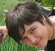
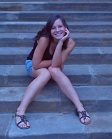
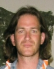

Léto 2020
ROZVOLŇOVÁNÍ – AKTUALIZACE
Dobrý večer, jak jsme slíbili, celou dobu bedlivě sledujeme situaci,
spolupracujeme s hygienickou stanicí a nyní pro vás máme krátké info:
- dětem je možné posílat pohledy, dopisy normálně poštou
- co se týče návštěvy veřejných koupališť zatím beze změn, ale máme připravený bohatý program i alternativy pro horké dny. Stále sledujeme, uvidíme zda nám to povolí.
- aktualizovali jsme Prohlášení o bezinfekčnosti dítěte (odkaz ke stažení níže), dokument musí být podepsaný nejdřive den před akcí – pozor na to.
- potvrzení od lékaře musí být letošní
- součástí vstupního filtru bude i kontrola hlaviček – výskyt vší nebo hnid je důvodem pro odeslání dítěte domů.
- dejte svému dítěti prosím více malých ručníčků na ruce (2 –3 ks) v táboře budou k dispozici i jednorázové, ale sichr je sichr:) Tématu co dětem zabalit sebou se budeme ještě věnovat v samostatném článku.
I přes některá nečekaná nařízení, která musíme všichni plnit jsme připravení na 1000 %, natěšení a dychtiví zařídit vašim dětem parádních 14 dní na táboře! Dáváme krk na to, že si to užijí.
Vaši vedoucí
Doporučení rodičům
Všechna zdravotní omezení,upravené stravování lékařem (např. bezlepková dieta, diabetes) či jiné další problémy dítěte, uveďte, prosím, do přihlášky
Mobilní telefony pokud možno zanechte doma
Návštěvy dítěte na táboře nejsou vhodné
Jídlo na cestu není nutné (cesta trvá cca 45 minut)
Výše kapesného závisí na Vás (vše potřebné děti dostanou, žádné vstupy si neplatí; tyto peníze jsou určené na útratu na výletech), peníze se přechovávají v trezoru, děti je u sebe nemají
z praktických důvodů je dobré mít peníze v podepsané peněžence
Nože, nůžky, dýky, šavle, meče, praky a jiné zbraně nechejte doma
V případě krajní nutnosti lze využít pračku
Co sebou na tábor
Seznam věcí
Milí rodiče, prosíme, podepište dětem všechny jejich věci a ukazujte jim, co do kufru dáváte. Menší děti si věci nepoznají a přesvědčit je o tom, že je to opravdu jejich, je někdy nad naše síly :)
Spousta oblečení pak tak zůstává po odjezdu dětí v táboře a vy píšete o různé zapomenuté kusy- podepsáním oblečení a věcí tomu předejdeme.
- Tepláky (alespoň čtvery)
- Mikiny (alespoň čtyři)
- Trička (alespoň šest)
- Spodní prádlo a ponožky na dva týdny, teplé ponožky
- Oblečení na spaní (např. tepláková souprava, dlouhé pyžamo) v noci může být chladno
- Šortky, kraťasy, bermudy
- Svetr, bundu, teplé ponožky
- Pláštěnku a holínky
- Sandály, pantofle, tenisky (alespoň dvoje)
- Plavky
- Kšiltovku, klobouček, šátek či jinou pokrývku hlavy!!!
- Krém na opalování, repelent, sluneční brýle
- Hygienické potřeby, ručníky (do sprchy a na koupaliště)
- Baterku
- Spacák, karimatka, polštářek
- Plyšáčka (pro případ, že nám bude smutno)
- Dopisní papíry, adresy, známky-které je také možné zakoupit u vedoucích
- Láhev na pití na výlety a i na program- podepsané
- Kapesné (výši kapesného necháme na vašem uvážení)
- Batůžek na výlet, starší děti chodí na delší výlety, kdy je třeba zabalit víc věcí, proto doporučujeme větší batoh
- Látkový pytel na špinavé prádlo, mnohem vhodnější než igelitky je i např. starší povlak na polštář
- Kostým na maškarní (není nutný)
Denní rozvrh
| 7:30 |
Budíček |
Rozcvička, ranní hygiena |
| 8:00 |
Snídaně |
|
| 8:30 |
|
Úklid chatek, příprava na program |
| 9:00 |
Dopolední program |
Plnění úkolů, soutěže, hry |
| 11:45 |
Příprava na oběd |
Mytí rukou |
| 12:00 |
Oběd |
|
| 12:30 |
Odpolední klid |
Odpočinek, psaní dopisů |
| 14:00 |
Svačina |
|
| 14:30 |
Odpolední program |
Plnění úkolů, hry, soutěže, koupaliště |
| 17:45 |
Příprava na večeři |
Mytí rukou |
| 18:00 |
Večeře |
|
| 18:30 |
Nástup |
Udílení diplomů a cen, pošta |
| 19:00 |
Osobní volno |
Hry, volná zábava |
| 20:30 |
Příprava na večerku |
Hygiena, čtení pohádek |
| 21:00 |
Večerka |
|
Každý rok je pro děti připravená lákavá a zajímavá celotáborová hra. V duchu této hry, která se skládá z plnění různých úkolů, se nese celý tábor.
Jednotlivé úkoly mohou být:
- Navigace, práce s mapou, buzolou, orientace v krajině
- Zdravověda, první pomoc
- Vázání uzlů
- Noční akce, stezka odvahy, hlídání amuletu či ohně, nocování pod širým nebem
- Rozdělávání ohně
- Vaření, příprava pokrmu
- Komunikace, morseovka, Césarova mřížka, substituční šifra
- Poznávání rostlin, stromů
- Stavba bunkrů, domečků pro skřítky (malé děti
Obecně děti vedeme k týmové hře, přátelství, loajalitě ke svému oddílu, rozvoji fantazie a smyslu pro fair play.
Celotáborová hra se rok od roku mění, aby byla poutavá i pro děti, které s námi jezdí pravidelně. Snažíme se, aby tato hra byla jasná a pochopitelná, zajímavá pro velké i malé děti.
Zdravotní péče
Základem zdravotního zabezpečení tábora je dětská doktorka či kvalifikovaná zdravotní sestra s plně vybavenou ošetřovnou a marodkou.
Při příjezdu do tábora jsou všechny děti seznámeny se zdravotnicí a je jim ukázáno, kde sídlí. Zdravotnice je dětem k dispozici kdykoli během pobytu (zdravotní péče poskytována ve dne i v noci). Po celou dobu tábora je připraveno osobní auto se zkušeným řidičem pro případný akutní odvoz k lékaři.
Přes den ordinuje lékařka v Žandově (cca. 3 km), ve vážnějších případech či v noci je blízko do nemocnic v České Lípě či Děčíně.
V přihlášce příslušný dětský lékař deklaruje zdravotní způsobilost dítěte k účasti na táboře (dle ustanovení zákona č. 258/2001 Sb. o ochraně veřejného zdraví), včetně případných zdravotních omezení a léků, jež má dítě po dobu tábora užívat (dlouhodobě užívané léky, antialergika, vitamínové preparáty apod.).Veškeré léky a vitaminové prostředky jsou rodiče povinni odevzdat zdravotnicím v den odjezdu u autobusu. Zdravotnice léky dětem vydává po dobu tábora v intervalech a dávkách určených lékařem.
Zdravotnice také předávají veškeré informace o zdravotním stavu dětí jejich vedoucím, aby tomu bylo možné přizpůsobit oddílové programy a hry.
Ubytování
Děti na našem táboře bydlí dle věku v dřevěných chatičkách, podsadových stanech nebo ve velkých vojenských stanech.
Nejmenší děti bydlí v celodřevěných chatičkách, spaní je zajištěno na dřevěných lůžkách. Každá chatička je označena obrázkem (jako ve školce) pro lepší orientaci dětí. Oblečení mají děti uložené v kufrech pod postelí. V chatičkách jsou poličky na drobnosti.
Starší děti jsou ubytovány v podsadových stanech. Spaní je zajištěno na dřevěných lůžkách. Ve stanu je polička na drobnosti. Oblečení je umístěno v kufrech pod postelí.
Nejstarší děti bydlí ve velkých vojenských stanech (mash). Podlaha je tvořená dřevěnými podlážkami. I v těchto stanech se spí na dřevěných lůžkách, pod kterými mají děti uložené kufry.
Všem dětem je spaní a prostor pro odpočinek zajištěn tak, aby splňoval všechny hygienické normy.
Vedoucí jsou ubytováni v bezprostřední blízkosti dětí ve vlastních stanech. V táboře se celou noc svítí. Kuchyně, jídelna, sprchy a toalety jsou umístěny v hlavní budově.
Stravování
Děti dostávají jídlo 5× denně (snídaně, oběd, svačina, večeře, druhá večeře). Jídlo se podává ve společné jídelně, kde jedí všichni společně s vedoucími. Děti sedí u stolu po oddílech. Vedoucí mají oddělený stůl. Jídelna sousedí s kuchyní a je s ní spojena výdejním okénkem, ke kterému si děti chodí pro jídlo. Jídelna i kuchyně se nachází ve zděné budově.
Snídaně
- Čaj, mléko, kakao
- Rohlíky s marmeládou, loupáky, šátečky, vánočka, bábovka, popřípadě chleba s pomazánkou
Oběd
- Polévka
- Hlavní jídlo
- Dle hlavního jídla zeleninový salát, či kompot
Svačina
- Jogurty
- Rohlíky, resp. chleba s pomazánkou, marmeládou či nutelou
- Kusová zelenina či ovoce (okurky, rajčata, jablka, meloun apod.)
Samozřejmě nikdo nejde spát s hladovým bříškem, a ani není o hladu, pokud to dané jídlo prokazatelně nejí. Vždy se snažíme vyhovět nárokům našich malých táborníků.
V případě táboráků či jiných nočních akcí bývá jedno jídlo navíc. Jako např. vuřty, pečení hadů (překvapení pro děti), pečivo, kusové ovoce, zelenina.
Laskominy a dobrůtky jsou součástí odměn a děti je dostávají za soutěže, proto ani o ně nebudou ochuzeny.
Obědy a večeře se podávají vždy teplé. Jejich rozmanitost a kvalita odpovídá všem současným poždavkům na optimální vývoj dítěte. Pokrmy se zásadně připravují přímo v táborové kuchyni v ten samý den, co jsou konzumovány.
Pokud se oddíly vypraví na celodenní výlet, je pro ně připravena odpovídající svačina. V případě delších výletů je jim jídlo dopraveno do místa tábořiště, či zajištěno jinak.
Po celý den i noc mají děti neustále přístup k čerstvě připravenému čaji (chladnější počasí) nebo k ovocným nápojům.
Dětem s upraveným režimem stravování (např. bezlepková dieta) jsou připravována odpovídající jídla, tak aby nedošlo k narušení jejich stravování. Rodiče jsou však povinni nám toto nahlásit již při přihlašování dítěte na tábor!
O nás
Andrea Novotná

- Narozen/a: 20.2.1995
- Bydlím: v Litoměřicích
- Co dělám: studuji „peďák“ a jednou snad ze mě bude „úča“
- Moje přezdívka: Na táboře jsem ještě žádnou nezískala, ale Láďa mi říká Ála. Jinak mi kamarádi říkají Ája, Andy, Andyna. Říkejte mi jak chcete, jen né Andrea.
- Moje oblíbená činnost:: Když je čas, jdu si zahrát fotbal. Ale nepohrdnu žádným sportem, dobrou knížkou nebo posezením či procházkou s kamarády.
- Na tábor jezdím: Na Bukovinu jezdím od roku 2008, kdy mě tam přivedla kamarádka s rodiči. V roce 2012 jsem byla přijata mezi praktikanty.
- Proč jezdím: Léto bez Bukoviny si nedovedu představit. Je to 14 dní v roce kdy člověk zapomene na všední problémy, neřeší věci okolo a jen si užívá. Vždy se tam sejde super kolektiv lidí, kteří tím táborem žijou a to je bezvadný.
- Zvláštní znaky, specializace: Hlasité smrkání, které nepřeslechnete :-).
- Email: andula.007@seznam.cz
Bára Kolářová

- Narozen/a:: 24.2.1995
- Bydlím: v Litoměřicích
- Co dělám: studuju na gymnáziu
- Moje oblíbená činnost: procházky se psem, čtení, klavír, karate
- Na tábor jezdím: od roku 2004, nejdříve jako malá holka do oddílu a letos jsem byla vybrána jako oddílový praktikant
- Proč jezdím: jsem ráda v přírodě a v dobrém kolektivu a obojí mám právě na táboře (a ještě mnohem víc)
Mgr. Dušan Hrstka

- Narozen/a: 25.1.1985
- Bydlím: Litoměřice/Brno
- Co dělám: Studijní referent
- Moje oblíbená činnost:: Rád se koukám na hezký věci, taky na filmy, rád si zahraju občas nějakou hru. Rád sportuju, hlavně florbal. Nebráním se novým věcem, lidem – rád se seznamuju :-). A miluju když nic nemusím, to dělám nejradši.
- Na tábor jezdím: Něco přes 10 let. Dostal jsem se tam přes Vlastu, hlavní vedoucí. Po pár letech v oddílu jsem začas jezdit jako praktikant a pak jako vedoucí a to se se mnou táhne dodnes.
- Proč jezdím: Tábor je skvělej v tom, že tam člověk zažije to, co normálně ne. A taky tam dělá úplně jiný věci než běžně. Čekaj tam na mě zážitky a zkušenosti, který bych jinde nenašel. Taky je tam parta skvělejch lidí, který jsou pro tábor zapálený, a se kterými to tam šlape jako hodinky.
- Zvláštní znaky, specializace: Rád vymýšlím program, jak pro děti tak pro vedoucí, tak aby se bavili všichni a aby se na něco nezapomnělo. Jinak jdu do všeho, co za to stojí (i když je to třeba půldenní pochod na rozhlednu, aby pak člověk řek: “jééé“).
Kontakty
Ke stažení